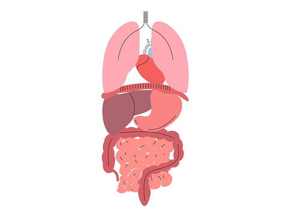
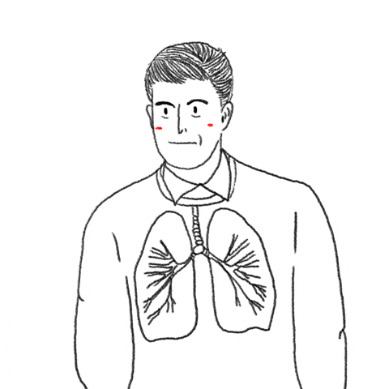

Why is it important to meditate?
Meditation dates back to ancient cultures, and has been proven to have
effective outcomes, such as heightened concentration. Meditation stems from the Latin term, 'meditatum', which means 'to ponder'. Several hieroglyphs artefacts illustrate that hunter gatherers were amomngst the first to meditate.
Evidence of importance of meditation
Through meditation, studies have shown a significant decrease in stress and anxiety levels, as well as a heightened degree of self awareness, improved physical and emotional health, as well as mental health.


Scientific benefits of meditation
Research has shown that meditation can reduce stress, and reduce the possibility of developing stress-related medical conditions, such as post-traumatic stress disorder.
1) May reduce memory loss; can help with dementia; a review of 12 studies found that multiple meditation styles increased attention, memory and mental speed in older participants
2) Increases positivity
3) Develops self awareness; a greater awareness of everything around you; which can help you feel more calm
4) Increases kindness and compassion to yourself and others
5) Can help overcome addiction; one study taught 19 recovering alcoholics how to meditate and this gave me a better control over their cravings
6) Improves sleep; helps redirect the 'runaway' thoughts often related to insomnia
7) Can help reduce pain; meditation can diminish the perception of pain in the brain thus can be used as a helpful tool when battling chronic pain.
8) Can decrease blood pressure; relaxes the nerve signals that coordinate heart function, tension in blood vessels, and the 'fight-or-flight' response that increases alertness in stressful situations